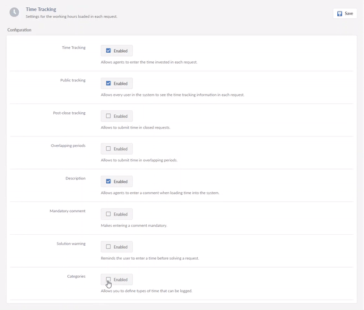
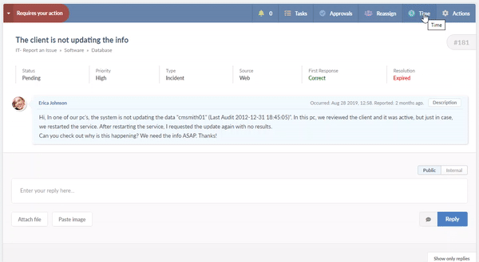
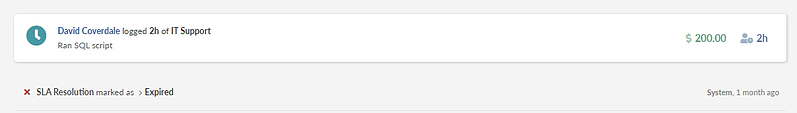

Introducción a la gestión financiera de TI
Al igual que con muchos términos de la industria, hay una variedad de definiciones que incluyen frases como:
Sin embargo, la gestión financiera de TI no se trata solo de "costos" y las capacidades de contabilidad, presupuesto y contracargo que expuso ITIL 4. También debe abarcar aspectos adicionales como el control, la eficiencia y el valor.
¿Por qué es importante la gestión financiera de TI?
Además del infame “hacer más con menos”, hay un desafío adicional para los departamentos de TI: demostrar valor.
Incluso si conocen los servicios de TI que ofrecen y brindan (el catálogo de servicios definitivamente ayuda en esto), comúnmente no saben cuánto cuesta entregar cada uno de esos servicios tanto a nivel consolidado como a nivel de unidad de consumo. Y sin esto, hay pocas posibilidades de que comprendan el valor que ofrecen los servicios de TI en relación con esos costos.
Costo por hora de servicio: llevando la gestión financiera de TI a la realidad con InvGate Service Desk
Ya viste por qué tu organización debería aprovechar las capacidades de gestión financiera de TI, pero ¿cómo comenzar? Si eres cliente de InvGate, será fácil.
Probablemente sepas que nuestra funcionalidad de seguimiento de tiempos permite monitorear la cantidad de horas dedicadas a una solicitud, para obtener información sobre quién hizo qué, cuándo y cuánto tiempo llevó.
Lo que probablemente no sabías es que puedes asociar costos a esas horas de trabajo registradas en un incidente. Así es como funciona:
1.- Lo que probablemente no sabías es que puedes asociar costos a esas horas de trabajo registradas en un incidente. Así es como funciona:
2.- Habilita la casilla de verificación para "Costo por hora".
3.- Justo debajo, deberás crear las categorías de costos que deseas monitorear, configurando un costo por hora para cada una, Por ejemplo, $100 por hora para Soporte de TI Nivel 1 y $200 por hora para Soporte de TI Nivel 2.
De esta forma, cuando un agente registre sus horas de trabajo dentro de una solicitud de esas categorías, podrá seleccionar el tipo de esas horas de trabajo:
El historial de la solicitud mostrará el costo de esas horas:
Y aquí viene la parte más útil: los reportes. En el cubo de Seguimiento de tiempos disponible en Reportes > Nuevo > Seguimiento de tiempos, tendrás una métrica de "costo incurrido", que te mostrará datos sobre el costo total de resolver solicitudes ordenadas por agente, mesa de ayuda, categoría, prioridad y cualquier otra clase que te interese. Veamos un ejemplo de un reporte que utiliza dimensiones para años, meses y categorías en las columnas y clientes en las filas:

InvGate Service Desk creará un reporte que mostrará las horas invertidas y el costo mensual de las soluciones ofrecidas a cada cliente. Como siempre, puedes guardar tus reportes personalizados para usarlos nuevamente e incluso programarlos para envíos periódicos.
En última instancia, sin una comprensión detallada de lo que cuestan los diferentes servicios de TI, es casi imposible tener conversaciones sobre el valor comercial que ofrecen o en cuáles es conveniente enfocar la atención y el presupuesto.
¿Puede tu departamento de TI afirmar que está actuando en el mejor interés de la organización si no comprende lo que cuesta ofrecer sus servicios? Ya ves por qué la gestión financiera de TI es una capacidad realmente importante.
ITIL 4 y la gestión financiera de TI
Si eres usuario de esta guía de mejores prácticas, habrás notado que el nombre de la capacidad ha cambiado a través de las diferentes versiones. En ITIL 4 pasó a llamarse "gestión financiera de servicios" y su propósito se describe como:
"... apoyar las estrategias y planes de gestión de servicios de la organización asegurando que sus recursos financieros e inversiones se están utilizando de manera efectiva".
Axelos, "Fundamentos de ITIL: ITIL 4 Edition" (2019)
De todas formas, se sigue apoyando en los mismos ejes que en versiones anteriores:
La publicación destaca el impacto de las nuevas tecnologías en los modelos de financiación, afirmando que:
“Se requieren presupuestos de TI flexibles para cubrir los costos de escalar servicios basados en la nube de una manera ágil y a demanda. Los presupuestos de TI fijos, a menudo planificados con meses de anticipación, enfrentan con dificultad esta escalación de recursos de TI".
Además, dado el enfoque que ITIL 4 tiene en la creación de valor (o co-creación), me sorprendería si las publicaciones y exámenes de alto nivel no vincularan la gestión financiera del servicio con el valor.
Sin embargo, no hay suficientes departamentos de TI que inviertan lo suficiente en capacidades de gestión financiera de TI...
Las encuestas de la industria de ITSM generalmente descubren que la gestión financiera de TI es una de las capacidades menos adoptadas a nivel formal. Por ejemplo, el informe “Technical Support Practices & Salary Report” de HDI publicado en 2018 mostraba a la gestión financiera de TI con una adopción de alrededor del 10%, siendo esto indicativo de otras encuestas de la industria.
Fuente: HDI, “Technical Support Practices & Salary Report”, (2018)
Fuente: www.invgate.com